CODING AGENTS AS PIXEL WORLD MODELS
traex/DeepSeek-V4.1-Flash · 0003
点击播放 · 原生 RGB 像素
逐轮保存的候选
回放视频、检查图与代码变化。
每份候选均可单独播放。实际图片检查记录在下方工具轨迹中。
候选 01播放与检查图
点击播放 · 原生 RGB 像素
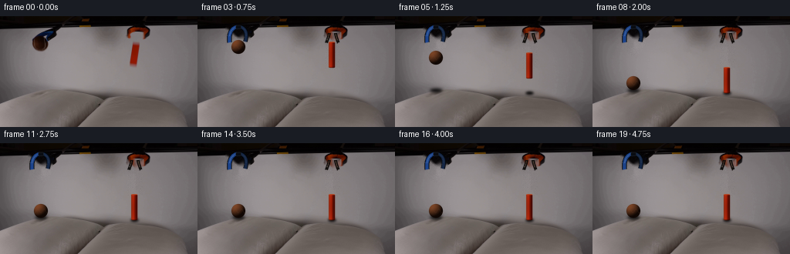
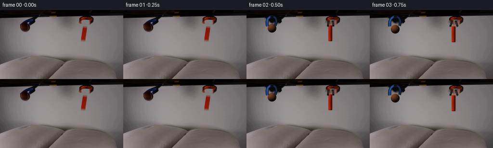
展开代码变化
--- 上一保存版本
+++ 本次保存版本
@@ -0,0 +1,435 @@
+from pathlib import Path
+import math
+
+import cv2
+import numpy as np
+from PIL import Image, ImageDraw, ImageFilter
+
+import artifact_io
+
+
+HERE = Path(__file__).resolve().parent
+W, H = 256, 144
+N, FPS = 20, 4
+SS = 4
+RELEASE_T = 0.48
+
+BALL_START = np.array([53.0, 38.2])
+BALL_REST_Y = 88.1
+BALL_RADIUS = 9.2
+BLOCK_BOTTOM_START = 65.0
+BLOCK_BOTTOM_REST = 100.0
+BLOCK_W, BLOCK_H = 8.3, 34.0
+GRAVITY = 54.8
+
+
+def smoothstep(value):
+ value = min(1.0, max(0.0, value))
+ return value * value * (3.0 - 2.0 * value)
+
+
+def alpha_composite_rgb(base, layer):
+ return np.asarray(
+ Image.alpha_composite(
+ Image.fromarray(base, "RGB").convert("RGBA"),
+ Image.fromarray(layer, "RGBA"),
+ ).convert("RGB")
+ )
+
+
+def paste_sprite(base, sprite, x, y):
+ h, w = sprite.shape[:2]
+ left, top = int(round(x)), int(round(y))
+ x0, y0 = max(0, left), max(0, top)
+ x1, y1 = min(W, left + w), min(H, top + h)
+ if x0 >= x1 or y0 >= y1:
+ return base
+
+ sx0, sy0 = x0 - left, y0 - top
+ patch = sprite[sy0:sy0 + (y1 - y0), sx0:sx0 + (x1 - x0)]
+ source = base[y0:y1, x0:x1].astype(np.float32)
+ color = patch[:, :, :3].astype(np.float32)
+ alpha = patch[:, :, 3:4].astype(np.float32) / 255.0
+ result = source * (1.0 - alpha) + color * alpha
+ output = base.copy()
+ output[y0:y1, x0:x1] = np.clip(result + 0.5, 0, 255).astype(np.uint8)
+ return output
+
+
+def make_plate(first):
+ mask = np.zeros((H, W), np.uint8)
+ cv2.ellipse(mask, (53, 38), (11, 11), 0, 0, 360, 255, -1)
+ cv2.rectangle(mask, (166, 22), (183, 68), 255, -1)
+ cv2.rectangle(mask, (37, 13), (67, 36), 255, -1)
+ mask = cv2.dilate(mask, np.ones((3, 3), np.uint8), iterations=1)
+ plate = cv2.inpaint(
+ cv2.cvtColor(first, cv2.COLOR_RGB2BGR),
+ mask,
+ 3.2,
+ cv2.INPAINT_TELEA,
+ )
+ plate = cv2.cvtColor(plate, cv2.COLOR_BGR2RGB)
+
+ # The inpainted regions retain a little photographic grain.
+ rng = np.random.default_rng(4107)
+ grain = rng.normal(0.0, 1.8, (H, W, 1))
+ plate = np.clip(plate.astype(np.float32) + grain * (mask[..., None] > 0), 0, 255)
+ return plate.astype(np.uint8)
+
+
+def bezier(points, steps=30):
+ points = np.asarray(points, np.float32)
+ t = np.linspace(0.0, 1.0, steps, dtype=np.float32)[:, None]
+ omt = 1.0 - t
+ return (
+ omt ** 3 * points[0]
+ + 3.0 * omt ** 2 * t * points[1]
+ + 3.0 * omt * t ** 2 * points[2]
+ + t ** 3 * points[3]
+ )
+
+
+def draw_stroke(draw, points, outline, fill, outline_width, fill_width, highlight=None):
+ xy = [tuple((point * SS).tolist()) for point in points]
+ draw.line(xy, fill=outline, width=max(1, round(outline_width * SS)), joint="curve")
+ draw.line(xy, fill=fill, width=max(1, round(fill_width * SS)), joint="curve")
+ if highlight is not None:
+ hxy = [tuple((point * SS).tolist()) for point in points[4:-7]]
+ draw.line(
+ hxy,
+ fill=highlight,
+ width=max(1, round(0.75 * SS)),
+ joint="curve",
+ )
+
+
+def render_jaws(open_amount):
+ layer = Image.new("RGBA", (W * SS, H * SS), (0, 0, 0, 0))
+ draw = ImageDraw.Draw(layer)
+ amount = smoothstep(open_amount)
+
+ # Blue grabber: the two lower fingers hinge outward from the fixed neck.
+ left = bezier(
+ [
+ (50.8, 14.0),
+ (44.5 + 0.2 * amount, 15.8),
+ (40.8 - 0.7 * amount, 21.0),
+ (44.0 - 2.5 * amount, 33.8 + 0.4 * amount),
+ ]
+ )
+ right = bezier(
+ [
+ (56.1, 14.0),
+ (61.2 + 0.3 * amount, 16.0),
+ (64.3 + 1.0 * amount, 21.4),
+ (59.4 + 2.4 * amount, 32.7 + 0.5 * amount),
+ ]
+ )
+ draw_stroke(
+ draw,
+ left,
+ (5, 10, 18, 255),
+ (27, 66, 137, 255),
+ 6.3,
+ 4.25,
+ (75, 119, 183, 210),
+ )
+ draw_stroke(
+ draw,
+ right,
+ (4, 7, 13, 255),
+ (20, 38, 68, 255),
+ 5.6,
+ 3.7,
+ (49, 70, 105, 180),
+ )
+ draw.rounded_rectangle(
+ (49.5 * SS, 12.0 * SS, 56.5 * SS, 16.4 * SS),
+ radius=1.4 * SS,
+ fill=(9, 12, 18, 255),
+ outline=(35, 39, 46, 255),
+ width=max(1, round(0.55 * SS)),
+ )
+
+ # Orange grabber: narrow black prongs emerge from the static orange head.
+ left_prong = bezier(
+ [
+ (170.7, 22.0),
+ (170.4, 25.4),
+ (168.8 - 0.4 * amount, 30.5),
+ (169.2 - 2.2 * amount, 34.4),
+ ]
+ )
+ right_prong = bezier(
+ [
+ (178.8, 22.0),
+ (179.2, 25.4),
+ (180.7 + 0.4 * amount, 30.5),
+ (180.1 + 2.2 * amount, 34.2),
+ ]
+ )
+ draw_stroke(
+ draw,
+ left_prong,
+ (4, 3, 2, 255),
+ (16, 14, 12, 255),
+ 4.0,
+ 2.65,
+ (86, 68, 51, 150),
+ )
+ draw_stroke(
+ draw,
+ right_prong,
+ (4, 3, 2, 255),
+ (19, 16, 13, 255),
+ 4.0,
+ 2.65,
+ (96, 72, 50, 145),
+ )
+
+ return np.asarray(
+ layer.resize((W, H), Image.Resampling.LANCZOS)
+ ).copy()
+
+
+def ball_sprite(scale_x=1.0, scale_y=1.0, phase=0.0):
+ size = 32
+ hi = size * SS
+ yy, xx = np.mgrid[:hi, :hi].astype(np.float32)
+ cx = cy = hi / 2.0
+ u = (xx - cx + 0.5) / (BALL_RADIUS * SS * scale_x)
+ v = (yy - cy + 0.5) / (BALL_RADIUS * SS * scale_y)
+ rr = np.sqrt(u * u + v * v)
+ inside = rr <= 1.0
+ z = np.sqrt(np.clip(1.0 - u * u - v * v, 0.0, 1.0))
+
+ light = np.array([-0.48, -0.62, 0.62], np.float32)
+ light /= np.linalg.norm(light)
+ diffuse = np.clip(u * light[0] + v * light[1] + z * light[2], 0.0, 1.0)
+ diffuse = diffuse ** 1.25
+
+ rng = np.random.default_rng(812)
+ fine = rng.normal(0.0, 1.0, (hi, hi))
+ fine = cv2.GaussianBlur(fine, (0, 0), 1.4 * SS)
+ fuzz = np.clip(fine * 2.3, -4.5, 4.5)
+
+ ambient = np.array([16.0, 7.0, 3.5])
+ base = np.array([84.0, 48.0, 27.0])
+ shade = ambient + base * diffuse[..., None] * 1.25
+ shade += fuzz[..., None] * np.array([0.92, 0.68, 0.46])
+
+ # Subtle tennis-ball seam, visible as the ball turns toward the camera.
+ seam_v = 0.27 * np.sin((u * 2.25 + phase) * math.pi)
+ seam_dist = np.abs(v - seam_v)
+ seam = np.exp(-(seam_dist / 0.075) ** 2) * (z > 0.25)
+ shade = shade * (1.0 - 0.14 * seam[..., None]) + np.array([121, 83, 57]) * (
+ 0.14 * seam[..., None]
+ )
+
+ edge = np.clip((1.0 - rr) * BALL_RADIUS * SS, 0.0, 1.0)
+ alpha = edge[..., None] * 255.0
+ rgba = np.dstack([np.clip(shade, 0, 255), alpha]).astype(np.uint8)
+ rgba[~inside] = 0
+ return np.asarray(
+ Image.fromarray(rgba, "RGBA").resize((size, size), Image.Resampling.LANCZOS)
+ ).copy()
+
+
+def block_sprite(angle=0.0):
+ size_w, size_h = 22, 48
+ hi_w, hi_h = size_w * SS, size_h * SS
+ yy, xx = np.mgrid[:hi_h, :hi_w].astype(np.float32)
+ cx, cy = hi_w / 2.0, hi_h / 2.0
+ left = cx - BLOCK_W * SS / 2.0
+ right = cx + BLOCK_W * SS / 2.0
+ top = cy - BLOCK_H * SS / 2.0
+ bottom = cy + BLOCK_H * SS / 2.0
+
+ # Rounded, slightly beveled rectangular solid.
+ x0, x1 = left, right
+ y0, y1 = top, bottom
+ radius = 1.5 * SS
+ sx = np.clip(np.maximum(x0 + radius - xx, xx - (x1 - radius)), 0, None)
+ sy = np.clip(np.maximum(y0 + radius - yy, yy - (y1 - radius)), 0, None)
+ rounded = (xx >= x0) & (xx <= x1) & (yy >= y0) & (yy <= y1)
+ rounded &= np.sqrt(sx * sx + sy * sy) <= radius
+ edge_alpha = np.clip(
+ np.minimum(
+ np.minimum(xx - x0 + 0.5, x1 - xx + 0.5),
+ np.minimum(yy - y0 + 0.5, y1 - yy + 0.5),
+ ),
+ 0.0,
+ 1.0,
+ )
+
+ horizontal = np.clip((xx - x0) / (x1 - x0), 0.0, 1.0)
+ vertical = np.clip((yy - y0) / (y1 - y0), 0.0, 1.0)
+ left_color = np.array([157.0, 48.0, 20.0])
+ mid_color = np.array([130.0, 26.0, 7.0])
+ right_color = np.array([84.0, 10.0, 1.5])
+ face = (
+ left_color[None, None] * np.clip(1.0 - 2.0 * horizontal, 0, 1)[..., None]
+ + mid_color[None, None]
+ * np.clip(1.0 - np.abs(horizontal - 0.43) / 0.43, 0, 1)[..., None]
+ + right_color[None, None] * horizontal[..., None]
+ )
+ face *= (1.0 - 0.12 * np.sin(vertical * math.pi))[..., None]
+ rng = np.random.default_rng(622)
+ texture = rng.normal(0.0, 1.0, (hi_h, hi_w))
+ texture = cv2.GaussianBlur(texture, (0, 0), 0.7 * SS)
+ face += texture[..., None] * np.array([2.6, 1.4, 0.7])
+
+ # Thin lit top and dark lower bevel make the small block read as solid.
+ face[(yy < y0 + 1.2 * SS) & rounded] = np.array([177, 68, 31])
+ face[(yy > y1 - 1.2 * SS) & rounded] *= 0.65
+ rgba = np.dstack(
+ [np.clip(face, 0, 255), (rounded * edge_alpha * 255.0)[..., None]]
+ ).astype(np.uint8)
+ sprite = Image.fromarray(rgba, "RGBA").resize(
+ (size_w, size_h), Image.Resampling.LANCZOS
+ )
+ if angle:
+ sprite = sprite.rotate(angle, Image.Resampling.BICUBIC, expand=False)
+ return np.asarray(sprite).copy()
+
+
+def make_shadow(center_x, center_y, radius_x, radius_y, opacity, blur):
+ pad = 12
+ w = int(math.ceil(radius_x * 2 + pad * 2))
+ h = int(math.ceil(radius_y * 2 + pad * 2))
+ mask = Image.new("L", (w * SS, h * SS), 0)
+ draw = ImageDraw.Draw(mask)
+ cx, cy = w * SS / 2.0, h * SS / 2.0
+ draw.ellipse(
+ (
+ cx - radius_x * SS,
+ cy - radius_y * SS,
+ cx + radius_x * SS,
+ cy + radius_y * SS,
+ ),
+ fill=round(opacity * 255),
+ )
+ mask = mask.filter(ImageFilter.GaussianBlur(blur * SS))
+ mask = mask.resize((w, h), Image.Resampling.LANCZOS)
+ rgba = np.zeros((h, w, 4), np.uint8)
+ rgba[:, :, 3] = np.asarray(mask)
+ return rgba
+
+
+def motion(frame):
+ t = frame / FPS
+ elapsed = max(0.0, t - RELEASE_T)
+ ball_distance = BALL_REST_Y - BALL_START[1]
+ ball_contact_t = RELEASE_T + math.sqrt(2.0 * ball_distance / GRAVITY)
+ block_distance = BLOCK_BOTTOM_REST - BLOCK_BOTTOM_START
+ block_contact_t = RELEASE_T + math.sqrt(2.0 * block_distance / GRAVITY)
+
+ if t < ball_contact_t:
+ ball_y = BALL_START[1] + 0.5 * GRAVITY * elapsed * elapsed
+ ball_x = BALL_START[0] + 0.16 * elapsed
+ ball_vx = 0.16
+ ball_vy = GRAVITY * elapsed
+ ball_squash = 0.0
+ else:
+ impact_speed = GRAVITY * (ball_contact_t - RELEASE_T)
+ tb = t - ball_contact_t
+ restitution = 0.18
+ bounce_duration = 2.0 * impact_speed * restitution / GRAVITY
+ if tb < bounce_duration:
+ ball_y = (
+ BALL_REST_Y
+ - impact_speed * restitution * tb
+ + 0.5 * GRAVITY * tb * tb
+ )
+ else:
+ ball_y = BALL_REST_Y
+ ball_x = BALL_START[0] + 0.16 * (ball_contact_t - RELEASE_T)
+ ball_vx = 0.0
+ ball_vy = -impact_speed * restitution + GRAVITY * tb
+ ball_squash = max(0.0, 1.0 - tb / 0.16) * 0.055
+
+ if t < block_contact_t:
+ block_bottom = BLOCK_BOTTOM_START + 0.5 * GRAVITY * elapsed * elapsed
+ block_angle = 0.0
+ else:
+ tb = t - block_contact_t
+ block_bottom = BLOCK_BOTTOM_REST
+ block_angle = 3.4 * math.exp(-5.5 * tb) * math.sin(24.0 * tb)
+ if tb > 0.62:
+ block_angle = 0.0
+
+ return {
+ "t": t,
+ "elapsed": elapsed,
+ "open": smoothstep(elapsed / 0.30),
+ "ball_x": ball_x,
+ "ball_y": ball_y,
+ "ball_vx": ball_vx,
+ "ball_vy": ball_vy,
+ "ball_squash": ball_squash,
+ "block_bottom": block_bottom,
+ "block_angle": block_angle,
+ }
+
+
+def render_frame(plate, first, frame):
+ if frame <= 1:
+ return first.copy()
+
+ state = motion(frame)
+ image = plate.copy()
+
+ ball_h = max(0.0, BALL_REST_Y - state["ball_y"])
+ ball_shadow_alpha = 20.0 * smoothstep((BALL_REST_Y - ball_h - 39.0) / 38.0)
+ if ball_h < 0.1:
+ ball_shadow_alpha = 24.0
+ ball_shadow = make_shadow(
+ 0, 0, BALL_RADIUS * 0.88, 2.25, ball_shadow_alpha, 1.9
+ )
+ image = paste_sprite(
+ image,
+ ball_shadow,
+ state["ball_x"] - ball_shadow.shape[1] / 2,
+ 97.0 - ball_shadow.shape[0] / 2,
+ )
+
+ block_gap = BLOCK_BOTTOM_REST - state["block_bottom"]
+ block_shadow_alpha = 18.0 * smoothstep((34.0 - block_gap) / 34.0)
+ if block_gap < 0.1:
+ block_shadow_alpha = 21.0
+ block_shadow = make_shadow(0, 0, 5.2, 1.8, block_shadow_alpha, 1.5)
+ image = paste_sprite(
+ image,
+ block_shadow,
+ 174.4 - block_shadow.shape[1] / 2,
+ 100.4 - block_shadow.shape[0] / 2,
+ )
+
+ ball = ball_sprite(
+ 1.0 + state["ball_squash"],
+ 1.0 - state["ball_squash"],
+ phase=0.20 + 0.10 * state["t"],
+ )
+ image = paste_sprite(image, ball, state["ball_x"] - 16.0, state["ball_y"] - 16.0)
+
+ block = block_sprite(state["block_angle"])
+ block_center_y = state["block_bottom"] - BLOCK_H / 2.0
+ image = paste_sprite(image, block, 174.2 - 11.0, block_center_y - 24.0)
+
+ jaws = render_jaws(state["open"])
+ image = alpha_composite_rgb(image, jaws)
+ return image
+
+
+def main():
+ first = np.asarray(Image.open(HERE / "first_frame.png").convert("RGB")).copy()
+ assert first.shape == (H, W, 3)
+ plate = make_plate(first)
+ frames = np.stack([render_frame(plate, first, i) for i in range(N)])
+ assert frames.shape == (N, H, W, 3) and frames.dtype == np.uint8
+ assert np.array_equal(frames[0], first)
+ artifact_io.save(frames, HERE)
+
+
+if __name__ == "__main__":
+ main()
候选 02播放与检查图
点击播放 · 原生 RGB 像素

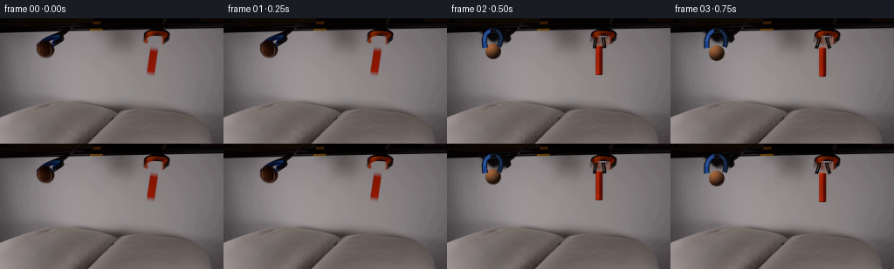
展开代码变化
--- 上一保存版本
+++ 本次保存版本
@@ -15,8 +15,8 @@
RELEASE_T = 0.48
BALL_START = np.array([53.0, 38.2])
-BALL_REST_Y = 88.1
-BALL_RADIUS = 9.2
+BALL_REST_Y = 85.2
+BALL_RADIUS = 9.0
BLOCK_BOTTOM_START = 65.0
BLOCK_BOTTOM_REST = 100.0
BLOCK_W, BLOCK_H = 8.3, 34.0
@@ -193,7 +193,7 @@
def ball_sprite(scale_x=1.0, scale_y=1.0, phase=0.0):
- size = 32
+ size = 30
hi = size * SS
yy, xx = np.mgrid[:hi, :hi].astype(np.float32)
cx = cy = hi / 2.0
@@ -213,26 +213,27 @@
fine = cv2.GaussianBlur(fine, (0, 0), 1.4 * SS)
fuzz = np.clip(fine * 2.3, -4.5, 4.5)
- ambient = np.array([16.0, 7.0, 3.5])
- base = np.array([84.0, 48.0, 27.0])
- shade = ambient + base * diffuse[..., None] * 1.25
- shade += fuzz[..., None] * np.array([0.92, 0.68, 0.46])
+ ambient = np.array([31.0, 17.0, 10.0])
+ base = np.array([111.0, 71.0, 42.0])
+ shade = ambient + base * diffuse[..., None] * 1.18
+ shade += fuzz[..., None] * np.array([1.05, 0.78, 0.55])
# Subtle tennis-ball seam, visible as the ball turns toward the camera.
seam_v = 0.27 * np.sin((u * 2.25 + phase) * math.pi)
seam_dist = np.abs(v - seam_v)
seam = np.exp(-(seam_dist / 0.075) ** 2) * (z > 0.25)
- shade = shade * (1.0 - 0.14 * seam[..., None]) + np.array([121, 83, 57]) * (
- 0.14 * seam[..., None]
+ shade = shade * (1.0 - 0.09 * seam[..., None]) + np.array([145, 102, 71]) * (
+ 0.09 * seam[..., None]
)
edge = np.clip((1.0 - rr) * BALL_RADIUS * SS, 0.0, 1.0)
alpha = edge[..., None] * 255.0
rgba = np.dstack([np.clip(shade, 0, 255), alpha]).astype(np.uint8)
rgba[~inside] = 0
- return np.asarray(
- Image.fromarray(rgba, "RGBA").resize((size, size), Image.Resampling.LANCZOS)
- ).copy()
+ sprite = Image.fromarray(rgba, "RGBA").resize(
+ (size, size), Image.Resampling.LANCZOS
+ )
+ return np.asarray(sprite.filter(ImageFilter.GaussianBlur(0.28))).copy()
def block_sprite(angle=0.0):
@@ -288,6 +289,7 @@
sprite = Image.fromarray(rgba, "RGBA").resize(
(size_w, size_h), Image.Resampling.LANCZOS
)
+ sprite = sprite.filter(ImageFilter.GaussianBlur(0.22))
if angle:
sprite = sprite.rotate(angle, Image.Resampling.BICUBIC, expand=False)
return np.asarray(sprite).copy()
@@ -384,13 +386,13 @@
if ball_h < 0.1:
ball_shadow_alpha = 24.0
ball_shadow = make_shadow(
- 0, 0, BALL_RADIUS * 0.88, 2.25, ball_shadow_alpha, 1.9
+ 0, 0, BALL_RADIUS * 0.82, 2.4, ball_shadow_alpha, 2.3
)
image = paste_sprite(
image,
ball_shadow,
- state["ball_x"] - ball_shadow.shape[1] / 2,
- 97.0 - ball_shadow.shape[0] / 2,
+ state["ball_x"] - 1.4 - ball_shadow.shape[1] / 2,
+ 93.6 - ball_shadow.shape[0] / 2,
)
block_gap = BLOCK_BOTTOM_REST - state["block_bottom"]
@@ -410,7 +412,7 @@
1.0 - state["ball_squash"],
phase=0.20 + 0.10 * state["t"],
)
- image = paste_sprite(image, ball, state["ball_x"] - 16.0, state["ball_y"] - 16.0)
+ image = paste_sprite(image, ball, state["ball_x"] - 15.0, state["ball_y"] - 15.0)
block = block_sprite(state["block_angle"])
block_center_y = state["block_bottom"] - BLOCK_H / 2.0
可观测工具轨迹
实际执行的命令与返回图片。
命令 1exit 0
/bin/bash -c "pwd && rg --files -g '"'!*.git*'"'"
命令 2exit 0
/bin/bash -c "sed -n '1,240p' prompt.txt"
命令 3exit 0
/bin/bash -c "sed -n '1,260p' GENERATION_RULES.md"
命令 4exit 0
/bin/bash -c "find . -maxdepth 2 -type f -printf '%p %s bytes\\n' | sort"
命令 5exit 0
/bin/bash -c "sed -n '1,260p' artifact_io.py"
命令 6exit 1
/bin/bash -c "python - <<'PY'
from PIL import Image
import numpy as np
im=Image.open('first_frame.png').convert('RGB')
a=np.array(im)
print(im.size, im.mode, a.dtype, a.min(), a.max(), a.mean(axis=(0,1)))
# dominant colors by quantization
q=Image.fromarray(a).quantize(colors=24)
p=q.getpalette(); c=np.array(q.getcolors())
for n,i in sorted(c, reverse=True)[:24]: print(n, p[i*3:i*3+3])
PY"命令 7exit 0
/bin/bash -c "sed -n '1,260p' player_template.html"
命令 8exit 0
/bin/bash -c "python - <<'PY' mods=['numpy','PIL','cv2','imageio','scipy','torch','matplotlib','skimage'] for m in mods: try: x=__import__(m); print(m, getattr(x,'__version__','ok')) except Exception as e: print(m, 'MISSING', type(e).__name__) PY"
命令 9exit 0
/bin/bash -c "python - <<'PY'
from PIL import Image
im=Image.open('first_frame.png')
for name,box in [('left',(20,0,100,85)),('right',(145,0,215,85)),('pillows',(0,85,256,144))]:
im.crop(box).resize(((box[2]-box[0])*6,(box[3]-box[1])*6),Image.Resampling.NEAREST).save('.tmp/'+name+'.png')
PY"命令 10exit 0
/bin/bash -c "python - <<'PY'
from PIL import Image, ImageDraw, ImageFont
im=Image.open('first_frame.png').convert('RGB').resize((1024,576), Image.Resampling.NEAREST)
d=ImageDraw.Draw(im)
for x in range(0,257,10):
c=(255,0,255) if x%50==0 else (100,255,100)
d.line((x*4,0,x*4,576),fill=c,width=1)
if x%20==0:d.text((x*4+2,2),str(x),fill=(255,0,255))
for y in range(0,145,10):
c=(255,0,255) if y%50==0 else (100,255,100)
d.line((0,y*4,1024,y*4),fill=c,width=1)
if y%20==0:d.text((2,y*4+2),str(y),fill=(255,0,255))
im.save('.tmp/grid.png')
PY"命令 11exit 0
/bin/bash -c "python - <<'PY'
from PIL import Image
im=Image.open('first_frame.png')
for name,box in [('left_tool',(30,0,95,65)),('right_tool',(155,0,210,75)),('left_pillow',(30,85,135,140)),('right_pillow',(120,85,230,140))]:
im.crop(box).resize(((box[2]-box[0])*10,(box[3]-box[1])*10),Image.Resampling.NEAREST).save('.tmp/'+name+'.png')
PY"命令 12exit 0
/bin/bash -c "python - <<'PY'
from PIL import Image
import numpy as np
a=np.asarray(Image.open('first_frame.png').convert('RGB')).astype(float)
for x in [40,50,56,65,80,100,150,175,190]:
l=a[:,x].mean(1)
# print strongest negative gradient below 80
g=np.diff(l)
cand=np.argsort(g[80:])[:4]+80
print('x',x,[(int(y),round(g[y],1),round(l[y],1)) for y in sorted(cand)])
PY"命令 13exit 0
/bin/bash -c "python - <<'PY'
from PIL import Image
import numpy as np
a=np.asarray(Image.open('first_frame.png').convert('RGB'))
# print pixel colors around object masks
for name,box in [('ball',(35,25,75,60)),('block',(160,25,185,70)),('bg',(120,20,150,60)),('pillowL',(40,90,120,135)),('pillowR',(145,90,220,135))]:
x0,y0,x1,y1=box; q=a[y0:y1,x0:x1].reshape(-1,3)
print('\\n',name,'mean',q.mean(0).round(1),'min',q.min(0),'max',q.max(0))
print('sample',q[::max(1,len(q)//8)].tolist())
PY"命令 14exit 0
/bin/bash -c "python - <<'PY'
from PIL import Image
im=Image.open('first_frame.png').convert('RGB')
box=(25,0,100,100)
c=im.crop(box).resize((750,1000),Image.Resampling.NEAREST)
c.save('.tmp/left_100.png')
box=(145,0,220,100)
im.crop(box).resize((750,1000),Image.Resampling.NEAREST).save('.tmp/right_100.png')
PY"命令 15exit 0
/bin/bash -c "python - <<'PY'
from PIL import Image
import numpy as np
a=np.asarray(Image.open('first_frame.png').convert('RGB'))
for name,(x0,y0,x1,y1) in {'lefttool':(30,0,90,70),'righttool':(155,0,200,80)}.items():
q=a[y0:y1,x0:x1].reshape(-1,3)
# quantize to 12 colors
im=Image.fromarray(q.reshape(y1-y0,x1-x0,3)).quantize(colors=16,method=Image.Quantize.MEDIANCUT)
p=np.array(im.getpalette()).reshape(-1,3)
counts=im.getcolors(); print(name)
for n,i in sorted(counts,reverse=True): print(n,p[i].tolist())
PY"命令 16exit 0
/bin/bash -c "python - <<'PY'
from PIL import Image
import numpy as np
a=np.asarray(Image.open('first_frame.png').convert('RGB'))
for y in range(30,69,3):
print(y, [(x,a[y,x].tolist()) for x in range(168,184,2)])
PY"命令 17exit 0
/bin/bash -c "python - <<'PY'
from PIL import Image
import numpy as np
a=np.asarray(Image.open('first_frame.png').convert('RGB'))
# approximate silhouette extents by color masks
Y,X=np.indices(a.shape[:2]); r,g,b=[a[:,:,i].astype(int) for i in range(3)]
ball=((X>35)&(X<72)&(Y>28)&(Y<60)&(r>35)&(r>g+8)&(g>b+2))
block=((X>165)&(X<182)&(Y>30)&(Y<67)&(r>70)&(g<110)&(r>g+35))
for name,m in [('ball',ball),('block',block)]:
ys,xs=np.where(m); print(name, xs.min(),xs.max(),ys.min(),ys.max(),len(xs), 'centroid',xs.mean(),ys.mean())
for y in range(ys.min(),ys.max()+1):
xx=np.where(m[y])[0]
if len(xx): print(y,xx.min(),xx.max())
PY"命令 18exit 0
/bin/bash -c "python - <<'PY'
from PIL import Image
import numpy as np
a=np.asarray(Image.open('first_frame.png').convert('RGB'))
q=a[27:49,39:66].reshape(-1,3)
im=Image.fromarray(q.reshape(22,27,3)).quantize(colors=20)
p=np.array(im.getpalette()).reshape(-1,3)
for n,i in sorted(im.getcolors(),reverse=True): print(n,p[i].tolist())
PY"命令 19exit 0
/bin/bash -c "python - <<'PY'
from PIL import Image
import numpy as np
a=np.asarray(Image.open('first_frame.png').convert('RGB'))
for y in range(28,49,2):
print(y, [(x,a[y,x].tolist()) for x in range(40,65,3)])
PY"命令 20exit 0
/bin/bash -c "python - <<'PY'
from PIL import Image
import numpy as np
a=np.asarray(Image.open('first_frame.png').convert('RGB'))
pts=[(41,25),(43,27),(40,30),(40,34),(43,36),(44,39),(61,30),(63,32),(65,35),(67,36),(64,39),(62,40),(47,25),(53,25),(58,25)]
for x,y in pts: print((x,y),a[y,x].tolist())
PY"命令 21exit 0
/bin/bash -c "python - <<'PY'
from PIL import Image
import numpy as np
im=Image.open('first_frame.png').convert('RGB')
# create exact static plate by cloning similar nearby background into object bboxes, then median blur only interior? save candidates
a=np.asarray(im).copy()
# simple horizontal inpaint by linear interpolation from left/right anchors
for y in range(20,70):
for x0,x1 in [(38,68),(164,184)]:
left=a[y,x0-4].astype(float); right=a[y,x1+4].astype(float)
for x in range(x0,x1+1):
t=(x-x0+4)/(x1-x0+8)
a[y,x]=np.round(left*(1-t)+right*t).astype(np.uint8)
Image.fromarray(a).save('.tmp/plate_linear.png')
PY"命令 22exit 0
/bin/bash -c "python - <<'PY'
import cv2, numpy as np
from PIL import Image
im=cv2.imread('first_frame.png')
a=cv2.cvtColor(im,cv2.COLOR_BGR2RGB)
Y,X=np.indices(a.shape[:2]); r,g,b=[a[:,:,i].astype(np.int16) for i in range(3)]
mask=np.zeros(a.shape[:2],np.uint8)
# brown ball
mask[((X>=40)&(X<=66)&(Y>=26)&(Y<=48)&(r>g+4)&(r>b+4))]=255
# red block
mask[((X>=164)&(X<=184)&(Y>=31)&(Y<=67)&(r>g+15)&(r>b+15))]=255
# fill holes/edge dilation
mask=cv2.dilate(mask,np.ones((3,3),np.uint8),iterations=1)
out=cv2.inpaint(cv2.cvtColor(a,cv2.COLOR_RGB2BGR),mask,4,cv2.INPAINT_TELEA)
cv2.imwrite('.tmp/plate_inpaint.png',out)
# side by side crops
cv2.imwrite('.tmp/plate_mask.png',mask)
PY"命令 23exit 0
/bin/bash -c "python - <<'PY'
from PIL import Image
import numpy as np
a=np.asarray(Image.open('first_frame.png').convert('RGB'))
for x in [45,52,60,165,174,182]:
print('\\nx',x)
for y in range(85,115,2): print(y,a[y,x].tolist())
PY"命令 24exit 0
/bin/bash -c "python - <<'PY'
from PIL import Image
im=Image.open('.tmp/plate_inpaint.png')
for name,box in [('li',(30,20,78,62)),('ri',(155,25,195,75))]:
im.crop(box).resize(((box[2]-box[0])*10,(box[3]-box[1])*10),Image.Resampling.NEAREST).save('.tmp/'+name+'.png')
PY"视觉工具实际返回图片 1
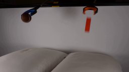
视觉工具实际返回图片 2
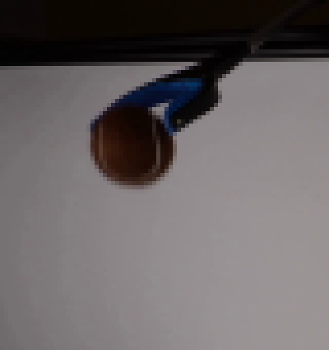
视觉工具实际返回图片 3
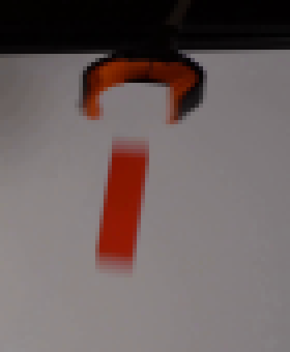
视觉工具实际返回图片 4
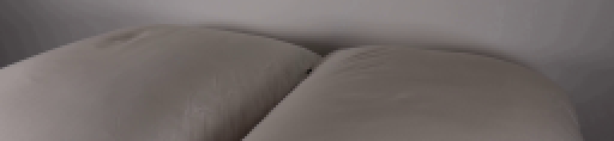
视觉工具实际返回图片 5
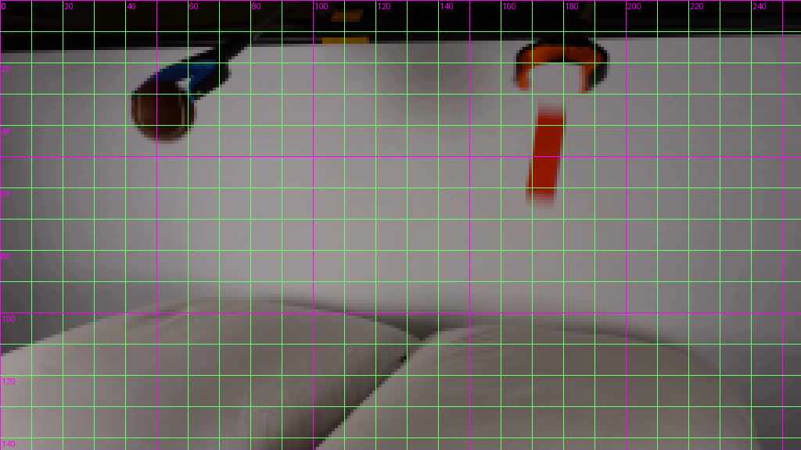
视觉工具实际返回图片 6
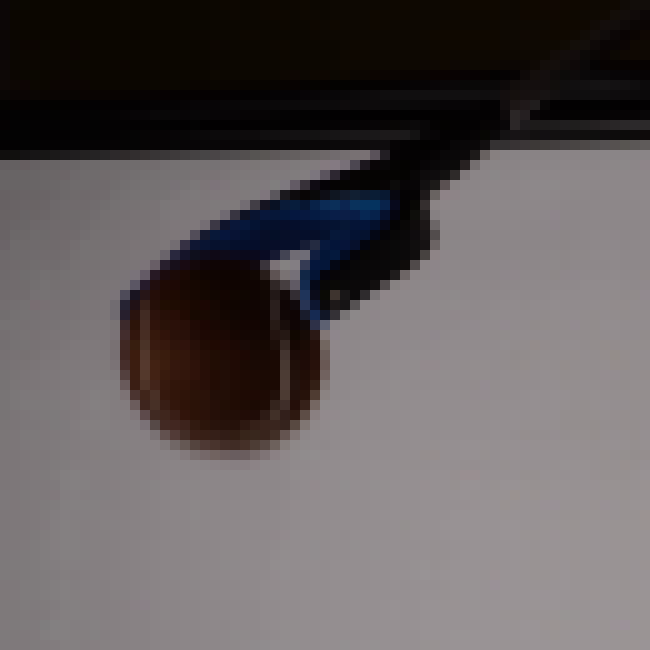
视觉工具实际返回图片 7
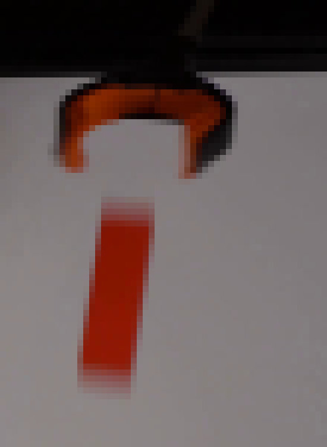
视觉工具实际返回图片 8
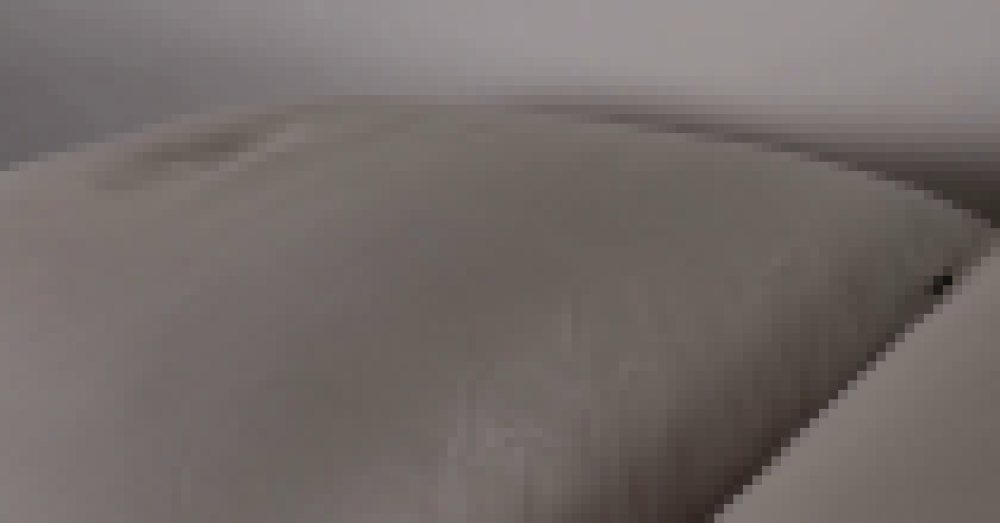
视觉工具实际返回图片 9
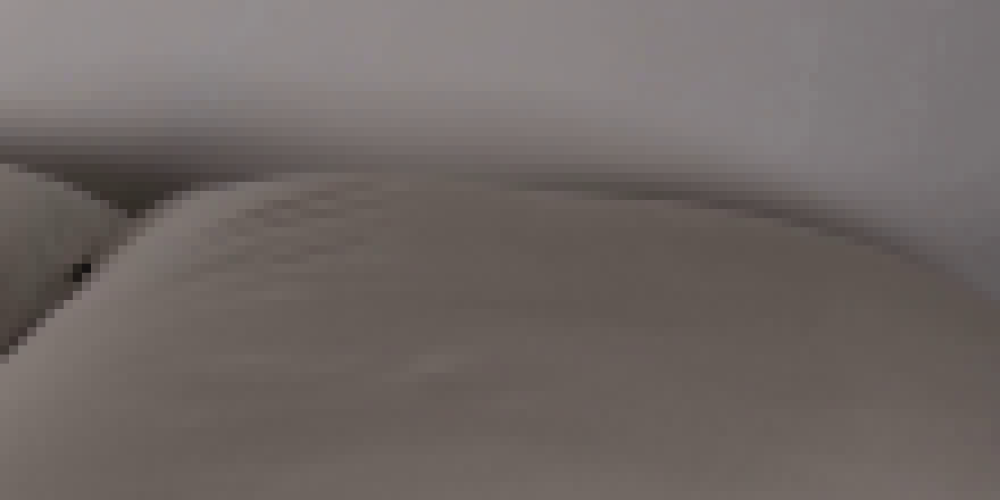
视觉工具实际返回图片 10
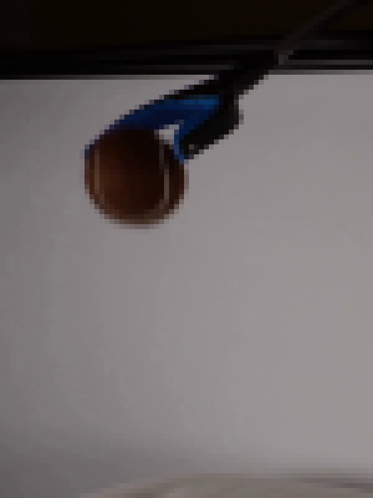
视觉工具实际返回图片 11
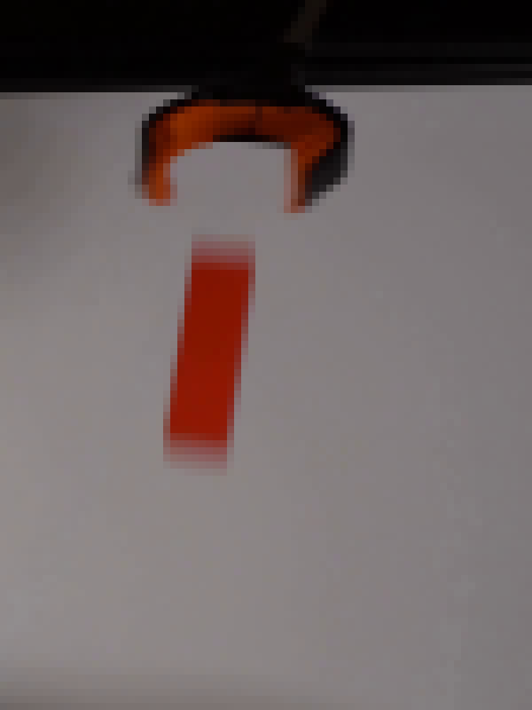
视觉工具实际返回图片 12
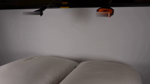
视觉工具实际返回图片 13
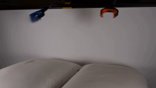
视觉工具实际返回图片 14
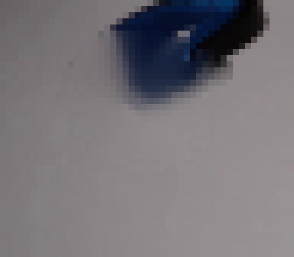
视觉工具实际返回图片 15
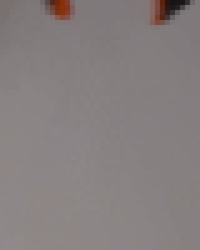
命令 25exit 0
/bin/bash -c 'ls -la generate.py 2>/dev/null || true && git status --short 2>/dev/null || true'
命令 26exit 0
/bin/bash -c 'python generate.py'
命令 27exit 0
/bin/bash -c "python - <<'PY'
from PIL import Image, ImageDraw
files=['frames/02.png','frames/05.png','frames/08.png','frames/11.png','frames/14.png','frames/19.png']
out=Image.new('RGB',(3*768,2*453),(20,20,20)); d=ImageDraw.Draw(out)
for i,f in enumerate(files):
im=Image.open(f).resize((768,432),Image.Resampling.NEAREST)
x=(i%3)*768; y=(i//3)*453
d.text((x+8,y+8),f,fill='white'); out.paste(im,(x,y+21))
out.save('.tmp/enlarged_sheet.png')
PY"命令 28exit 0
/bin/bash -c "python - <<'PY'
from PIL import Image
import numpy as np
a=np.asarray(Image.open('first_frame.png').convert('RGB')); b=np.asarray(Image.open('frames/00.png').convert('RGB'))
print('frame00 exact',np.array_equal(a,b))
for i in range(1,20):
c=np.asarray(Image.open(f'frames/{i:02d}.png').convert('RGB'))
print(i, np.mean(np.abs(c.astype(int)-b.astype(int))), np.count_nonzero(c"'!=b))
PY'命令 29exit 0
/bin/bash -c "python - <<'PY'
from PIL import Image
im=Image.open('frames/19.png')
for name,box in [('b19',(25,60,90,120)),('r19',(150,60,210,125)),('j19',(30,0,210,90))]:
im.crop(box).resize(((box[2]-box[0])*8,(box[3]-box[1])*8),Image.Resampling.NEAREST).save('.tmp/'+name+'.png')
PY"命令 30exit 0
/bin/bash -c "python - <<'PY'
from PIL import Image
import numpy as np
for i in [2,3,4,5,6,7,8,9,10,11]:
a=np.asarray(Image.open(f'frames/{i:02d}.png').convert('RGB'))
Y,X=np.indices(a.shape[:2]); r,g,b=[a[:,:,i].astype(int) for i in range(3)]
bm=(r>g+8)&(r>b+8)&(X>30)&(X<80)&(Y>25)&(Y<115)
if bm.any():
ys,xs=np.where(bm); print(i,'ball',xs.min(),xs.max(),ys.min(),ys.max(),xs.mean(),ys.mean())
rm=(r>g+20)&(r>b+20)&(X>155)&(X<195)&(Y>20)&(Y<125)
if rm.any():
ys,xs=np.where(rm); print(' block',xs.min(),xs.max(),ys.min(),ys.max(),xs.mean(),ys.mean())
PY"命令 31exit 0
/bin/bash -c "python - <<'PY'
import cv2, numpy as np
from PIL import Image
for i in [0,5,19]:
a=np.asarray(Image.open(f'frames/{i:02d}.png').convert('RGB'))
cv2.imwrite(f'.tmp/up{i}.png',cv2.cvtColor(cv2.resize(a,(1024,576),interpolation=cv2.INTER_CUBIC),cv2.COLOR_RGB2BGR))
PY"命令 32exit 0
/bin/bash -c "python - <<'PY'
from PIL import Image
im=Image.open('first_frame.png')
im.crop((30,10,80,60)).resize((800,800),Image.Resampling.LANCZOS).save('.tmp/startball.png')
PY"命令 33exit 0
/bin/bash -c 'python generate.py'
命令 34exit 0
/bin/bash -c "find . -maxdepth 1 -mindepth 1 -printf '%f\\n' | sort"
命令 35exit 0
/bin/bash -c "python -m py_compile generate.py && python - <<'PY'
from PIL import Image
import numpy as np
from pathlib import Path
files=sorted(Path('frames').glob('*.png'))
print('frames',len(files))
a=np.asarray(Image.open('first_frame.png').convert('RGB'))
print('shape',a.shape,'dtype',a.dtype)
print('frame00_exact',np.array_equal(a,np.asarray(Image.open(files[0]).convert('RGB'))))
print('all_256x144',all(Image.open(p).size==(256,144) for p in files))
print('artifacts',[(p.name,p.stat().st_size) for p in [Path('pixels.npz'),Path('index.html'),Path('inspection.png')]])
PY"命令 36exit 0
/bin/bash -c "python - <<'PY'
import numpy as np
from PIL import Image
from pathlib import Path
z=np.load('pixels.npz')
print('pixels',z['pixels'].shape,z['pixels'].dtype)
first=np.asarray(Image.open('first_frame.png').convert('RGB')).astype(np.uint32)
packed=(first[:,:,0]<<16)|(first[:,:,1]<<8)|first[:,:,2]
print('npz_frame00_exact',np.array_equal(z['pixels'][:,:,0],packed))
html=Path('index.html').read_text()
print('player_embedded', 'const DATA=' in html and 'window.__pixelReady=true' in html)
PY"命令 37exit 0
/bin/bash -c "find __pycache__ -type f -delete 2>/dev/null; rmdir __pycache__ 2>/dev/null || true; find . -maxdepth 1 -mindepth 1 -printf '%f\\n' | sort"
命令 38exit 0
/bin/bash -c "git diff -- generate.py 2>/dev/null | sed -n '1,260p'"
命令 39exit 0
/bin/bash -c 'python generate.py > .tmp/final_render.log 2>&1 && sha256sum frames/00.png frames/19.png pixels.npz index.html && tail -n 6 .tmp/final_render.log'
视觉工具实际返回图片 16

视觉工具实际返回图片 17
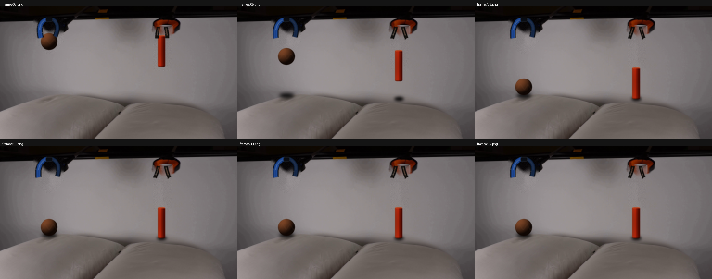
视觉工具实际返回图片 18

视觉工具实际返回图片 19
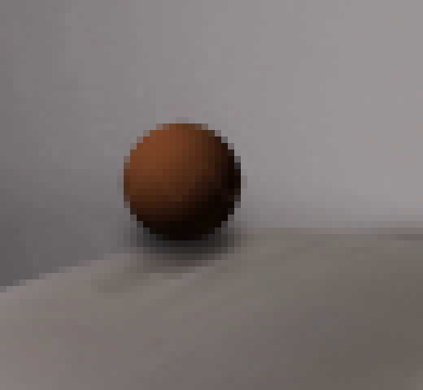
视觉工具实际返回图片 20
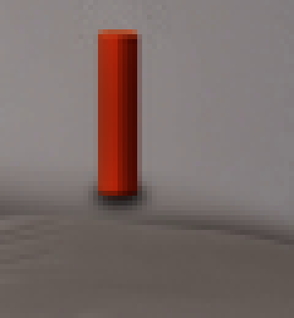
视觉工具实际返回图片 21
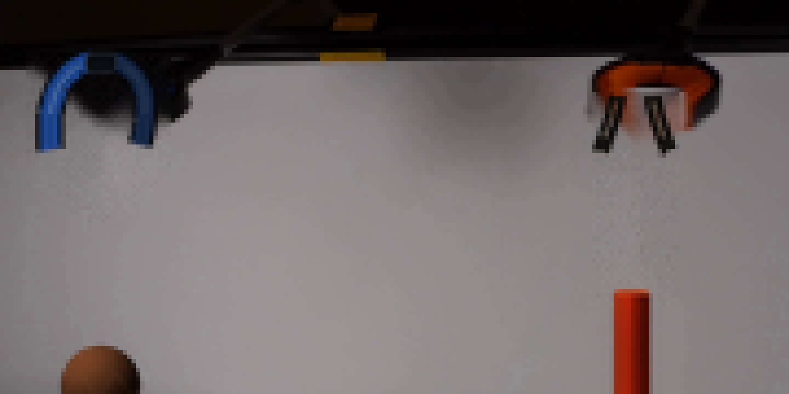
视觉工具实际返回图片 22
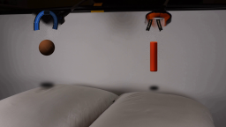
视觉工具实际返回图片 23
视觉工具实际返回图片 24
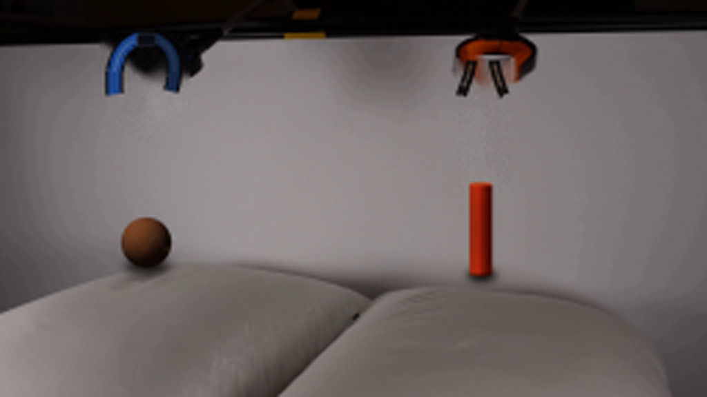
视觉工具实际返回图片 25
视觉工具实际返回图片 26
视觉工具实际返回图片 27
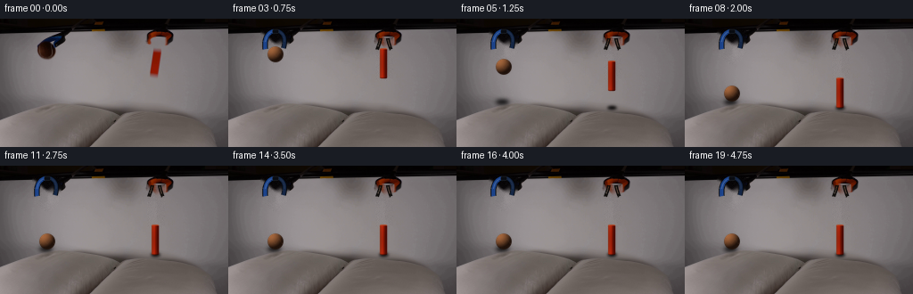
视觉工具实际返回图片 28
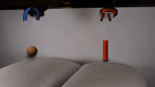
保存候选 2 份；完成命令 39 次；可验证图片返回 28 张。原始 API 响应与完整日志保留在本地。